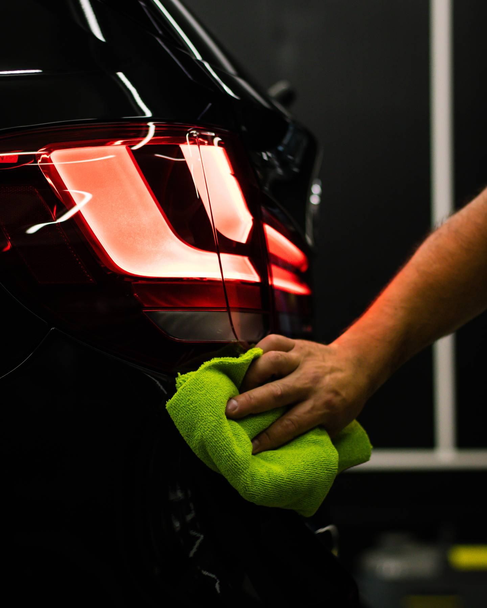
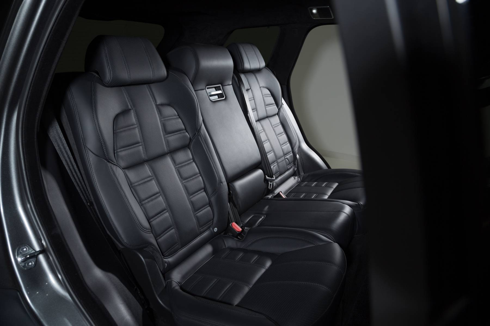
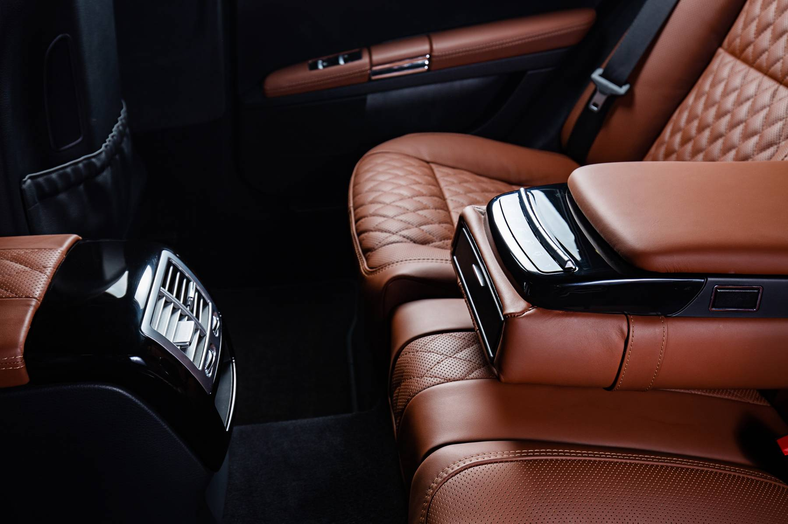
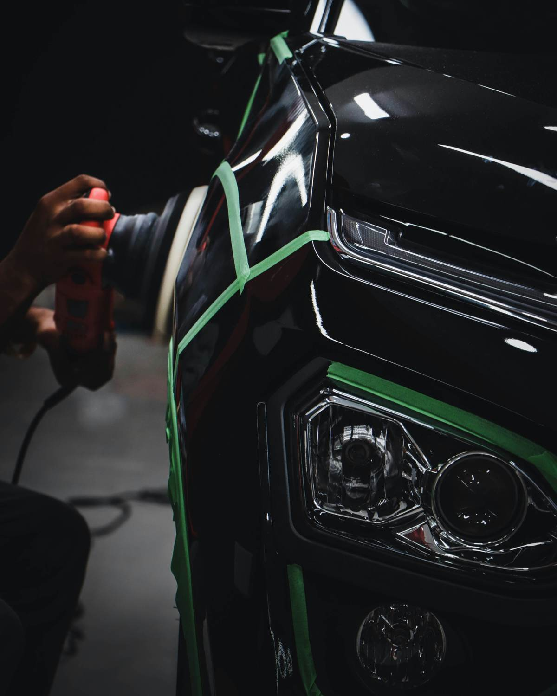
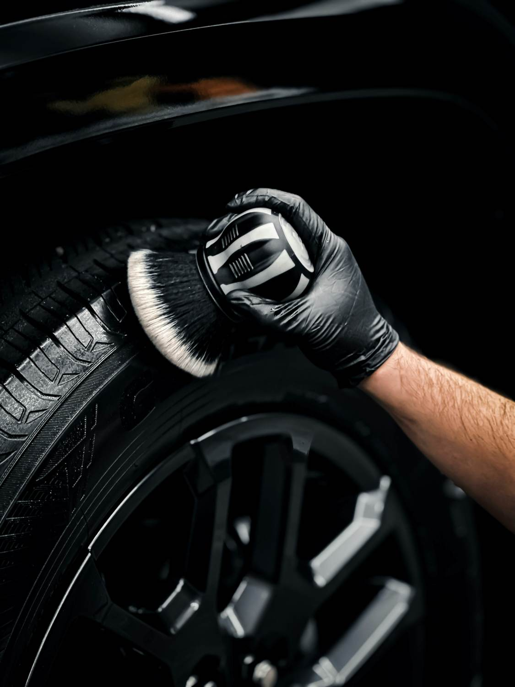

Detailing automobile
à Mons & Baudour.
Le soin qui donne du Car’actère à votre véhicule : nettoyage intérieur et extérieur, polissage et traitement céramique pour voitures, utilitaires et camions.
Avant / après detailing : la différence se voit.
Visuel provisoire.
Nettoyage voiture, intérieur premium et detailing complet.

Car clean
Le nettoyage classique : jantes, prélavage, lavage, cire de protection, séchage à la main et à l'air chaud, puis aspiration, plastiques, cuir et vitres.
Découvrir →
Car care
L'intérieur premium : nettoyage vapeur des surfaces, moquettes et sièges, injection / extraction ou soin du cuir, shampoing des tapis, écrans et multimédia.
Découvrir →
Car’actère
Intérieur et extérieur premium : traitement anti-goudron, lavage à la main, séchage microfibre, protection de carrosserie et intérieur Car care complet.
Découvrir →
Du soin.
Du caractère.
Redonnez à votre carrosserie l'éclat du premier jour.
Le polissage corrige les défauts visibles de la peinture : micro-rayures, traces de lavage, ternissure due au soleil ou aux lavages répétés. Il redonne profondeur et brillance à la carrosserie.
Le traitement céramique vient ensuite : une protection transparente qui résiste aux UV, aux fientes et au goudron, et facilite l'entretien grâce à son effet déperlant. On ne pose jamais de céramique sans polir avant.
Demander un devis
Voitures, utilitaires et camions.
Voitures
Choisissez librement la formule la mieux adaptée à votre voiture, de l'entretien courant au detailing complet.
Utilitaires
Nettoyage adapté aux particuliers comme aux entrepreneurs, y compris les flottes jusqu'à 10 véhicules. Uniquement sur devis.
Camions
Un nettoyage adapté aux particuliers et aux professionnels de la route. Uniquement sur devis.
Prêt à faire briller votre véhicule ?
Basé à Baudour, nous intervenons dans toute la région de Mons et du Borinage.
Formules de detailing à Mons et Baudour.
Nettoyage classique, intérieur premium ou detailing complet : choisissez la formule adaptée à votre véhicule. Le prix final dépend de la surface du véhicule.
Polissage, céramique et options
Le soin qui donne du Car’actère.
Basé à Baudour, Car’actère Detailing propose le nettoyage automobile et le detailing dans toute la région de Mons et du Borinage.
Nous intervenons sur les voitures, les utilitaires et les camions, pour les particuliers comme pour les professionnels qui veulent entretenir leur véhicule ou leur flotte.

Des techniques douces pour la peinture et l'habitacle.
Lavage soigné
Prélavage, lavage à la main, séchage microfibre et séchage à l'air chaud sans contact.
Nettoyage vapeur
Surfaces, moquettes et sièges nettoyés à la vapeur, avec injection / extraction ou soin du cuir.
Protection
Cire ou protection de carrosserie, polissage et traitement céramique pour garder l'éclat plus longtemps.
Nos réalisations de detailing automobile.
Votre devis detailing, simple et rapide.
Précisez votre demande et votre véhicule : nous revenons vers vous rapidement.
Car’actère Detailing · Rue de la Source 36, 7331 Baudour · 0471 54 76 96 · caractere.detailing@gmail.com